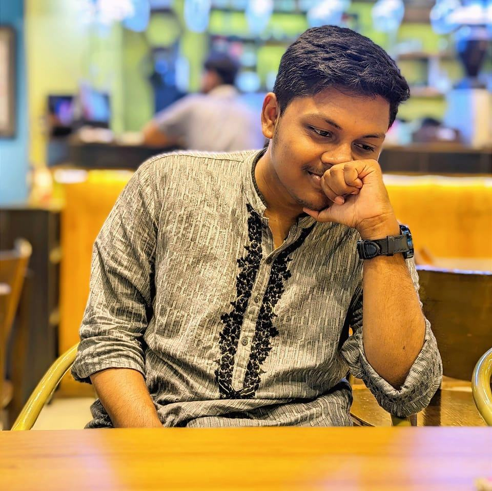

Md Ataullha Saim
Student, Computer Science, SUST
Trainee AI Engineer, Synesis IT PLC
Updates
03/2024 - Landed a fulltime AI Job (😨 Have Probitional Period)
02/2024 - Mentored 2+ thesis team from SUST CSE, SWE Department
02/2024 - Co-host SUST DL Engima 1.0 (contributed in mAP script)
02/2024 - LREC-COLING'24 paper got rejected with a descent review
02/2024 - Submitted the review version for my first (co-authored) journal paper (Q1, IF: 7.7)
01/2024 - Submitted a ViT based clf. paper for fun in ICEEICT'24
12/2023 - Prseneted my first conference paper in ICCIT'23
10/2023 - Achieved the status of Kaggle Notebook Expert
10/2023 - Recently achieved 6th position in DL Sprint 2.0 - BUET CSE Fest 2023. [Due to my Blunder]
Reading Now


Alternating between these two books. Next in line: CULTure at Zomato : How to Rewire Your Brain for Greatness by Deepinder Goyal, Ashish Goel, Naina Sahni
Seeking Permanent Lecturer Positions Commencing December 2024 in a Prestigious Private University in Dhaka!
I will not accept any research work or research group paper publication projects before December 2024 without a professor's recommendation.
Hello! I'm Md Ataullha Saim from Dhaka, Bangladesh, an enthusiastic undergraduate student deeply passionate about Machine Learning (ML) and Research. With an engineering mindset, I'm driven by an insatiable curiosity for technology and a fervor for research methodology. Currently in my final year, I'm pursuing a major in Computer Science and Engineering (CSE) at Shahjalal University of Science and Technology (SUST) . I'm fortunate to be working on my undergraduate thesis under the guidance of Professor Dr. Mohammad Shahidur Rahman . My research interests span a wide spectrum, from delving into Low Resource Text-to-Speech Synthesis (LRTTS) to exploring Object Detection . Additionally, I'm keen on diving into Natural Language Processing (NLP) and Human-Computer Interaction (HCI). I'm actively seeking opportunities to contribute as a Research Assistant in Computer Science and Engineering research labs. Simultaneously, I'm open to intern/ part-time roles in the Software Engineering industry, particularly in Machine Learning positions.
PS: My first name pronunciation is more like “Ataullah”Would you like a brief sample of my work? Check out this recent conference presentation I gave on my first conference paper.
Selected Publications
PakhiderChobi: A Comprehensive Dataset for
Real-time Detection of Bangladeshi Birds
M. Ataullha, M. Rahman and M. Shahidur Rahman.
26th ICCIT, Cox's Bazar, Bangladesh, 2023
Expertise in Research
Research Interests
Time in Dhaka:
Last updated: 20 April, 2024